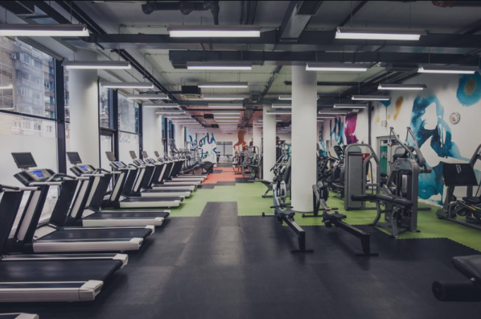

.png)
See More
Health and fitness are two huge zones of center this year. From improving psychological wellness and refining your general prosperity, to working in some restoring self-care into your everyday practice. The wellbeing scene of today is overflowing with various approaches to make your brain and body that greatly improved. In any case, how would you realize what to search for when scouring the web for rousing wellbeing sites?
Solid living is an objective of many, and we can learn numerous approaches to fuse the best in class wellbeing patterns into our every day lives. However, the commotion of online media can leave us scratching our heads regarding what practices are ideal to lead a solid way of life.
Health and fitness are two huge zones of center this year. From improving psychological wellness and refining your general prosperity, to working in some restoring self-care into your everyday practice. The wellbeing scene of today is overflowing with various approaches to make your brain and body that greatly improved. In any case, how would you realize what to search for when scouring the web for rousing wellbeing sites?
Solid living is an objective of many, and we can learn numerous approaches to fuse the best in class wellbeing patterns into our every day lives. However, the commotion of online media can leave us scratching our heads regarding what practices are ideal to lead a solid way of life.
Join Us Now
See More